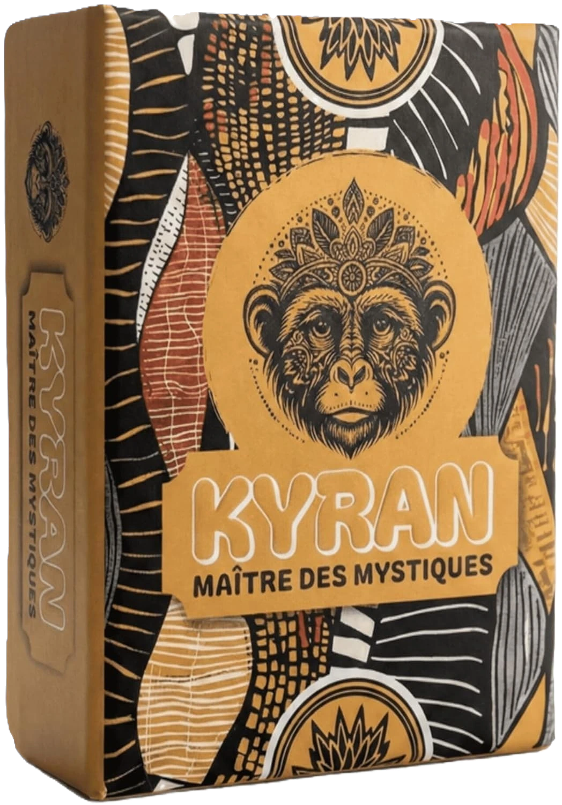

À propos · Auteur & méthode
À propos de KYRAN
Qui crée le jeu, comment le blog est rédigé et d'où viennent nos informations.
Qui est derrière KYRAN ?
KYRAN est un jeu de cartes français créé et édité par Corentin Sence, avec des illustrations de Crea by Floh. Ce site est le site officiel du jeu ; son blog compare des jeux de cartes pour aider à choisir. Cette page indique qui écrit, comment, et ce que vous pouvez vérifier.
Corentin Sence, auteur et éditeur
Corentin Sence a conçu les règles de KYRAN et édite le jeu sous son nom, comme entrepreneur individuel en micro-entreprise (SIREN 840 817 548). Le nom KYRAN est une marque verbale déposée auprès de l'INPI sous le numéro 5135853, en classe 28 (jeux, jouets). Ces informations officielles sont détaillées dans les mentions légales.
Le dossier de presse retrace la genèse du projet. Les premières idées du jeu naissent durant l'enfance de l'auteur, fasciné par les mécaniques de pari du Tarot Africain. Le projet KYRAN est lancé début 2025, avec un travail de game design pour structurer les règles et les rendre accessibles à un large public, de 3 à 6 joueurs. La commercialisation officielle a lieu en février 2026.
Crea by Floh, illustratrice
Les illustrations et la direction artistique sont signées Crea by Floh, dont le portfolio est consultable sur graphiste.com. Le travail mené pendant l'année 2025 a donné l'identité visuelle « Dark & Gold » et des motifs géométriques propres à chaque carte. Les droits d'utilisation et de reproduction des visuels sont réservés.
Édition française et fabrication
KYRAN est une édition française : les 7 cartes de règles sont en français et un QR code imprimé sur la boîte renvoie vers la vidéo de règles, détaillées aussi dans les règles officielles. Le jeu est livré dans une boîte cloche rigide au format compact (11,5 × 8,5 × 2,8 cm), avec des cartes vernies toilées de 300 g/m². Il est déclaré conforme à la directive européenne 2009/48/CE sur la sécurité des jouets (normes EN 71), pour 8 ans et plus. Le détail figure dans les mentions légales et dans les conditions générales de vente.

Le jeu en bref
KYRAN est un jeu de plis avec pari obligatoire. À chaque manche, chaque joueur annonce le nombre exact de plis qu'il va remporter. La règle centrale : la somme des paris ne peut jamais être égale au nombre de plis de la manche, donc au moins un joueur se trompe à chaque manche. Un pari raté coûte autant de cartes Vie que l'écart entre le pari et les plis gagnés.
Les manches se jouent avec 7, 6, 5, 4, 3 puis 2 cartes en main, avant une manche Mystique à une seule carte, posée sur le front : on voit les cartes des autres, mais pas la sienne. La partie s'arrête dès qu'un joueur a perdu toutes ses vies ; celui qui en conserve le plus devient Maître des Mystiques. Quatre pouvoirs (répartis sur huit cartes) et la carte Mystique ajoutent des retournements de situation.
- Genre
- Jeu de plis, paris et bluff
- Joueurs
- 3 à 6 (ne se joue pas à deux)
- Durée
- Environ 30 minutes
- Âge
- Dès 8 ans
- Prix
- 9,99 € sur la boutique officielle, 17,99 € sur Amazon
- Sortie
- 31 janvier 2026
Où l'acheter
Le jeu se commande sur la boutique officielle (9,99 €, expédition suivie sous 24 à 48 h) ou sur Amazon.fr (17,99 €). Le jeu est aussi proposé sur Etsy (boutique KyranJeu, 9,99 € + 2,99 € de livraison). Pour apprendre à jouer, les règles officielles incluent une vidéo de 5 minutes ; l'Initiation est un simulateur gratuit en ligne.
Un héritier du Tarot Africain et du Whist
KYRAN reprend la logique du contrat des jeux de plis traditionnels, en particulier le Tarot Africain (aussi appelé Whist 22), et la modernise : cartes Pouvoir, cartes Vie visibles qui remplacent le score sur papier, manche Mystique jouée à l'aveugle. Pour comparer avec les originaux, consultez nos pages sur le Tarot Africain, le Whist moderne et le comparatif des jeux de plis.

Notre méthode éditoriale
Le blog propose plus de 30 sélections de jeux de cartes et de société, classées par besoin : alternatives à un jeu connu, apéro, famille, cadeaux, soirées, formats particuliers comme les jeux à 3 ou à 6 joueurs. Voici comment elles sont construites.
Comment les jeux sont choisis
Chaque sélection part d'une question concrète, par exemple « quel jeu à trois joueurs ? » ou « quelle alternative à Skyjo ? ». Les jeux sont examinés selon quatre critères :
- Nombre de joueurs : la plage annoncée par l'éditeur est indiquée pour chaque jeu, et la fiche précise quand un titre n'est pas conçu pour le format recherché.
- Durée : la durée moyenne d'une partie, pour savoir si le jeu tient dans un apéro ou une soirée.
- Accessibilité : âge minimum, temps nécessaire pour expliquer les règles, matériel requis.
- Rapport qualité-prix : le prix indicatif rapporté au contenu de la boîte et à l'envie d'y rejouer.
Chaque article présente ses critères avant la liste des jeux, signale un défaut quand il y en a un et propose un avis tranché.
D'où viennent les informations
Les faits de chaque fiche (nombre de joueurs, durée, âge conseillé, auteur, année) proviennent de sources publiques : fiches des éditeurs, BoardGameGeek, Wikipédia et boutiques spécialisées comme Philibert. Les fiches renvoient vers ces sources pour que vous puissiez vérifier. Nous n'inventons ni chiffres de ventes ni notes : quand un fait n'est pas vérifiable, nous ne l'écrivons pas.
Prix indicatifs et corrections
Les prix des jeux tiers sont indicatifs (affichés « environ ») car ils varient selon les boutiques et les périodes. Les prix de KYRAN, 9,99 € sur kyran-jeu.fr et 17,99 € sur Amazon, sont ceux de nos pages de vente. Si vous constatez une erreur (prix, nombre de joueurs, durée, lien cassé), écrivez à contact@kyran-jeu.fr : nous vérifions puis corrigeons la page.
Que signifient les liens « sponsored » ?
Certains liens vers Amazon ou vers des boutiques portent l'attribut rel="sponsored". C'est la convention recommandée par Google pour signaler un lien commercial : il mène vers une page où l'on peut acheter, et non vers une source d'information. Les liens vers BoardGameGeek, Wikipédia ou les sites d'éditeurs sont des références. Dans les sélections, le lien Amazon de KYRAN est marqué de cette façon.
Déclaration d'intérêt
KYRAN est notre propre jeu. Corentin Sence en est l'auteur et l'éditeur, et il rédige aussi les sélections du blog. KYRAN y apparaît donc dans la grande majorité des sélections, signalé comme « Notre coup de cœur ». Cet intérêt commercial est réel et nous le déclarons ici. Pour que les sélections restent utiles, nous disons quand KYRAN n'est pas le bon choix :
- il ne se joue pas à deux : il faut au moins trois joueurs, six au maximum ;
- ce n'est pas un jeu coopératif : chacun parie contre les autres ;
- le hasard de la donne joue un rôle, même si le pari et l'ordre de jeu laissent une vraie part de stratégie ;
- ce n'est pas un jeu de stratégie lourde : il vise des parties d'environ 30 minutes, dès 8 ans.
Suivre les publications
Chaque article du blog affiche sa date de publication. Le flux RSS permet de suivre les nouveautés, et le plan du site liste toutes les pages.
Avis et réputation
La note de KYRAN est de 4,7 sur 5, d'après 33 avis clients sur Amazon.fr (relevé du 5 septembre 2026). Nous reprenons la note telle qu'Amazon l'affiche, sans la modifier. Elle peut avoir évolué depuis : la fiche Amazon de KYRAN fait foi.
Les avis affichés sur la page d'accueil et sur la page de commande portent un badge : « Achat vérifié » ou « Club des Testeurs Vine », ce dernier désignant des testeurs ayant reçu un exemplaire par le programme Amazon Vine. Les deux catégories sont distinguées pour que vous sachiez d'où vient chaque avis.
Les avis ne sont pas tous élogieux, et nous le disons. Les réserves qui reviennent : l'impossibilité d'y jouer à deux, des règles imprimées sur des cartes qui se confondent facilement avec le reste du paquet, et le sentiment d'un jeu de plis dans la lignée du Tarot Africain plutôt que d'une révolution. Elles aident à décider si KYRAN correspond à votre table.
Presse et contact
Le dossier de presse rassemble le communiqué, la fiche technique, la description des mécaniques et la genèse du projet. Les journalistes, blogueurs et créateurs de contenu peuvent demander un exemplaire de test, envoyé gracieusement.
- E-mail : contact@kyran-jeu.fr (réponse sous 24 à 48 heures ouvrées)
- Instagram : @kyran.jeu
- Informations légales : mentions légales, conditions générales de vente et politique de confidentialité
- Questions fréquentes : FAQ KYRAN
Références
Les sources externes citées sur cette page et dans nos sélections :
- Instagram, compte officiel du jeu : instagram.com/kyran.jeu
- Amazon.fr, fiche produit et avis de KYRAN (ASIN B0G217LD87) : amazon.fr/dp/B0G217LD87
- Etsy, annonce du jeu dans la boutique KyranJeu : etsy.com/fr/listing/4585329666
- BoardGamesFlix, fiche du jeu « Kyran : Maître des Mystiques » : boardgamesflix.com/boardgames/kyran
- Ludovox, Ludochrono sur KYRAN (publié le 31 janvier 2026) : ludovox.fr/ludochrono-kyran
- YouTube, vidéo « kyran maître des mystiques » de la chaîne Le Pirate Ludique : youtube.com/watch?v=5W0KNuoPUt4
- Etsy, boutique KyranJeu : etsy.com/shop/KyranJeu
- YouTube, règles de KYRAN en 5 minutes (Ludochrono) : youtube.com/watch?v=aconMJG9uSQ
- YouTube, teaser de KYRAN : youtube.com/watch?v=y0YVn-lZMAc
- graphiste.com, portfolio de Crea by Floh, illustratrice : graphiste.com/pictures/542454
- BoardGameGeek, base de référence des jeux de société : boardgamegeek.com
- Wikipédia, fiches de jeux en français : fr.wikipedia.org
- Philibert, boutique spécialisée en jeux de société : philibertnet.com
Pour aller plus loin sur le site : règles de KYRAN, Tarot Africain, Initiation en ligne, commander le jeu et le blog.